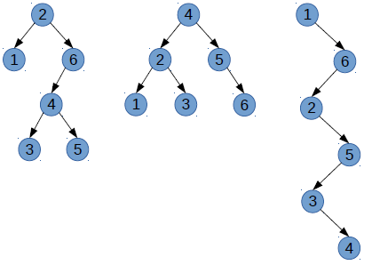
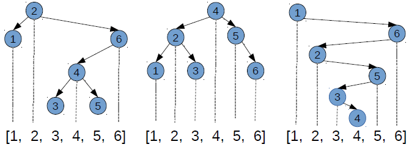

Exemple¶

Dans le cas d'un parcours de cet AB en largeur d'abord, les noeuds sont visités dans l'ordre : 2 - 8 - 9 - 4 - 5 - 3.
Un arbre binaire (abrégé AB dans la suite) est un arbre dont les noeuds possèdent au plus deux fils. Ainsi, un arbre binaire non vide peut être définit comme un noeud, appelé racine possédant un sous-arbre gauche et un sous-arbre droit (éventuellement vides) qui sont eux-mêmes des arbres binaires.
Cette définition étant récursive, la plupart des traitements sur les AB sont naturellement récursifs : on traite un noeud courant et on demande à traiter les noeuds fils. On a déjà écrit de tels algorithmes pour calculer la taille ou la hauteur d'un AB (voir Thème 1 / Chapitre 4 : Les arbres). On ne s'était alors pas soucié de l'ordre dans lequel tous les noeuds étaient visités.
Dans ce chapitre, nous allons notamment voir des algorithmes permettant d'explorer, récursivement ou non, tous les noeuds d'un AB mais dans un ordre prédéfini. Nous verrons dans un second temps une structure de données appelée arbre binaire de recherche, qui est un AB particulier permettant de stocker des éléments de façon à rendre leur recherche très efficace par la suite.
Dans le cas où un arbre est parcouru niveau par niveau (en commençant par la racine est en lisant de gauche à droite) on parle d'un parcours en largeur d'abord. On utilise le terme largeur car dans ce cas on explore les noeuds en balayant en largeur chaque niveau de l'arbre.
Dans le cas d'un parcours de cet AB en largeur d'abord, les noeuds sont visités dans l'ordre : 2 - 8 - 9 - 4 - 5 - 3.
Un parcours en largeur d'abord n'est pas récursif.
L'utilisation d'une file permet d'écrire facilement l'algorithme de parcours en largeur d'abord. Le principe est le suivant :
On utilise ainsi la file pour y insérer et donc traiter (en défilant) tour à tour les noeuds, niveau par niveau.
Voici une implémentation qui utilise une classe File pour représenter une file et la classe Noeud (cf. Thème 1 / Chapitre 4 : Les arbres) pour représenter un AB :
def parcours_en_largeur(A):
"""Affiche les étiquettes de l'arbre binaire A selon un parcours en largeur."""
F = File()
F.enfiler(A)
while F.taille() != 0:
a = F.defiler() # renvoie le sommet
if a is not None:
print(a.etiquette)
F.enfiler(a.gauche)
F.enfiler(a.droit)
Dans le cas où on explore complètement l'un des deux sous-arbres avant le second on parle d'un parcours en profondeur. On utilise le terme profondeur car dans ce cas on tente toujours de visiter le noeud le plus éloigné de la racine à condition qu'il soit le fils d'un noeud déjà visité.
On distingue trois ordres particuliers pour explorer en profondeur les sous-arbres gauche, droit et la racine du noeud courant :
Voici l'ordre des noeuds visités dans les 3 ordres de parcours en profondeur :
Les algorithmes de parcours en profondeur s'écrivent facilement de manière récursive. Pour l'algorithme de parcours suivant l'ordre préfixe on procède ainsi :
Voici une fonction récursive qui implémente le parcours préfixe :
def parcours_prefixe(A):
"""Affiche les étiquettes de l'arbre binaire A selon un parcours par ordre préfixe."""
if A is not None:
print(A.etiquette)
parcours_prefixe(A.gauche)
parcours_prefixe(A.droit)
Remarque : Il suffit de changer l'ordre des lignes 4, 5 et dans le
ifpour retrouver les ordres infixe et suffixe de parcours des noeuds.
Pour vérifier sur une étiquette e est présente dans un noeud d'un arbre binaire A, il faut le parcourir (en largeur ou en profondeur). Dans le pire cas, c'est-à-dire si l'étiquette est absente, il faut bien regarder tous les noeuds pour conclure. Ainsi, pour un arbre binaire de $N$ noeuds, l'algorithme de recherche a un coût en temps de l'ordre de $N$ (noté $O(N)$).
Morale :
- La recherche dans un arbre binaire prend un temps similaire à la recherche dans un tableau ou dans une liste.
- Mais dans un tableau, on a vu que sous hypothèse de tri, on pouvait faire mieux : une recherche dichotomique ! (voir programme de Première NSI).
- Peut-on faire de même dans un arbre binaire ? Autrement dit, quelle hypothèse d'ordre faire pour permettre une recherche plus efficace ? ⇨ les arbres binaires de recherche
Un arbre binaire de recherche, abrégé ABR, est un arbre binaire dans lequel tout noeud a une clé (= étiquette) :
Le schéma suivant permet de retenir ce qu'est un ABR :

Exemples : Voici quelques exemples d'ABR :

La propriété d'ordre en chaque noeud d'un ABR assure qu'il existe un unique chemin pour toute clé stockée : la comparaison en chaque noeud indique si la recherche doit être poursuivie à gauche ou à droite. La recherche est fructueuse si la clé est trouvée en un noeud; infructueuse s'il est aboutit à un sous-arbre vide.
Cela permet d'écrire facilement l'algorithme récursif de recherche d'une clé dans un ABR :
def etq_presente(A, e):
"""Renvoie True si l'étiquette e est présente dans l'ABR A, et False sinon."""
if A is None:
return False
if e == A.etiquette:
return True
elif e < A.etiquette:
return etq_presente(A.gauche, e)
else:
return etq_presente(A.droit, e)
Exemples :
etq_presente(A, 5) renvoie Vrai

etq_presente(A, 0) renvoie Faux

Remarques : La propriété d'ordre sur les clés d'un ABR implique :
Le principe de l'ajout d'une clé est simple : pour que l'élément qu'on va ajouter soit retrouvé lors d'une future recherche, il faut l'insérer à l'endroit où conduira cette recherche. Cela conduit à suivre un chemin unique dans l'ABR et on insère le nouveau noeud avec la clé dès qu'on aboutit à un sous-arbre vide.
On présente ici une version qui renvoie un nouvel arbre à chaque insertion car elle est simple à écrire et permet de gérer facilement le cas de l'insertion dans un arbre vide représenté par None.
On peut écrire des versions avec modification en place de l'arbre passé en argument mais cela rend l'algorithme plus long à écrire et on doit réserver un cas particulier pour l'insertion dans un arbre vide (voir activités).
Insérer une clé e dans un ABR A revient à construire un ABR qui contient e et toutes les clés de A. Le principe est relativement simple :
e.e est inférieure ou égale à l'étiquette de A il faut insérer la clé dans le sous-arbre gauche de A ce qui revient à créer un nouvel ABR dont :A (inchangée) ;A dans lequel on insère la clé e ⇒ appel récursifA (inchangé).e est strictement supérieure à l'étiquette de A il faut insérer la clé dans le sous-arbre droit de A en procédédant de manière similaire.On aboutit à la fonction ajouter suivante :
def ajouter(A, e):
if A is None:
return Noeud(e, None, None)
elif e <= A.etiquette:
return Noeud(A.etiquette, ajouter(A.gauche, e), A.droit)
else:
return Noeud(A.etiquette, A.gauche, ajouter(A.droit, e))
Remarques et exemples :
L'insertion revient à créer une feuille.
Par exemple, ajouter(A, 0) :

Même en cas d'égalité, on descend toujours jusqu'à un sous-arbre vide.
Par exemple, ajouter(A, 2) :

La recherche d'une clé dans un ABR conduit, dans le pire cas, à parcourir un chemin de la racine jusqu'à une feuille. Le coût de cet algorithme est donc de l'ordre de la hauteur $H$ de l'arbre (= profondeur maximale des feuilles).
Rappel : On a vu (voir Thème 1 / Chapitre 4 : Les arbres) que la hauteur $H$ d'un arbre binaire à $N$ noeuds vérifie :
$$ \left \lfloor \log_2(N) \right \rfloor \leq H \leq N - 1,$$où $\left \lfloor \log_2(N) \right \rfloor$ est la partie entière du logarithme en base 2 de $N$ , c'est-à-dire le nombre de bits nécessaires à son écriture en base 2 diminué d'une unité (c'est la définition des informaticiens).
Plus précisément, si l'arbre est parfait (tous les niveaux sont remplis) on a $H = \left \lfloor \log_2(N) \right \rfloor$ et si l'arbre est filiforme alors $H = N - 1$.
Ainsi, le coût de la recherche est de l'ordre de :
Moralité : Dans le cas où l'AB est bien équilibré, la recherche est donc efficace, comme une recherche dichotomique dans un tableau trié. En effet, la structure de l'ABR est similaire à l'organisation d'un tableau (ou liste) trié(e).

Faire une recherche dans un ABR, c'est faire une recherche dans un tableau trié en sautant aux indices correspondant : ABR équilibré <=> recherche dichotomique.
L'insertion d'une clé se fait au niveau d'une feuille, ce qui conduit toujours à parcourir un chemin de la racine jusqu'à une feuille. On en déduit que le pire cas est égal au meilleur cas et que le coût de l'insertion est donc le même que celui de la recherche : de l'ordre de $\log_2(N)$ dans le cas d'un AB bien équilibré.
Références :
Germain BECKER, Lycée Mounier, ANGERS
Ressource éducative libre distribuée sous Licence Creative Commons Attribution - Pas d’Utilisation Commerciale - Partage dans les Mêmes Conditions 4.0 International